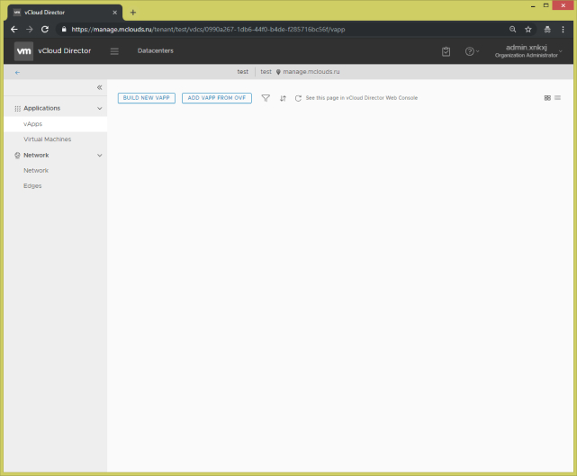
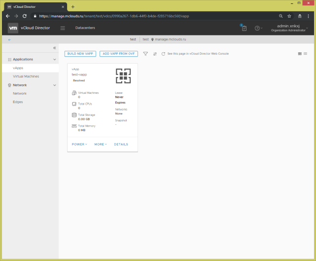
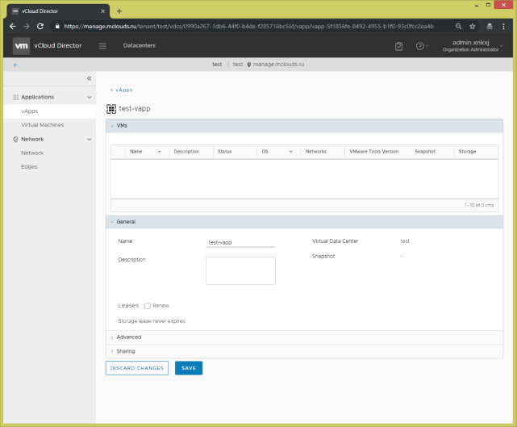

vApp — це контейнер, де розміщено віддалені машини. vApp дозволяє об'єднувати віртуальні машини за їх призначенням (відділ маркетингу, відділ бухгалтерії, поштовий сервер і т.п.) і керувати групою віртуальних машин. Новий контейнер можна створити порожнім, з шаблоном віртуальної машини зі встановленою ОС або в оболонці ВМ (без ОС).
Перейдіть за адресою в панель управління vCloud Director 9 HTML5 UI за адресою https://manage.mclouds.ru/tenant/
1. У лівому меню виберіть "vApps" в розділі "Applications" і натисніть кнопку "Build new vApp"
2. Введіть ім'я vApp в поле "Name", додайте опис, якщо потрібно, в поле Description. Натиснувши на кнопку "Build", створитися новий порожній vApp, якщо потрібно додати віртуальні машини в vApp, натисніть на кнопку "Add virtual machine".

3. Після створення vApp ви побачите ваш створений vApp.
4. Натиснувши на кнопку "Details" можете переглянути параметри vApp і список віртуальних машин в vApp.

коментарі до документа
Приховати коментарі Показати коментаріОлексій Климюк
19.09.2019, 15:40
Мережа, яка використовується для взаємодії VM і vApp в межах Organization і / або для доступу до зовнішніх мереж. OrgNet створюється і конфігурується OrgAdmin. Organization може містити безліч OrgNet.
Олексій Климюк
19.09.2019, 15:40
Мережа, яка використовується для взаємодії VM і vApp в межах Organization і / або для доступу до зовнішніх мереж. OrgNet створюється і конфігурується OrgAdmin. Organization може містити безліч OrgNet.
Олексій Климюк
19.09.2019, 15:40
Мережа, яка використовується для взаємодії VM і vApp в межах Organization і / або для доступу до зовнішніх мереж. OrgNet створюється і конфігурується OrgAdmin. Organization може містити безліч OrgNet.